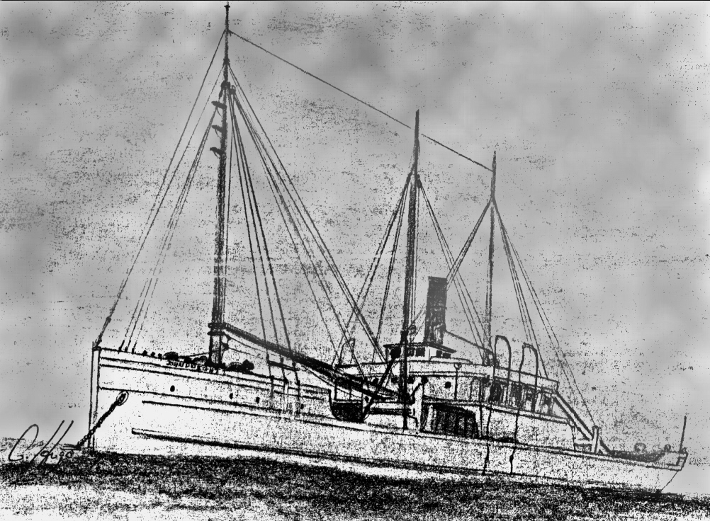

Link Index
MWDC
Home Page
Shipwrecks Page
Albert Galatin
Alice M. Colburn
Alice M. Lawrence
Ardandhu
Barge and Crane
California
Charles S. Haight
Chelsea
Chester Poling
City of Salisbury
Corvan
Dixie Sword
Edward Rich
French Van Gilder
Henry Endicott
Herbert
Herman Winter
Hilda Garston
HMCS St. Francis
James Longstreet
John Dwight
Kershaw
Kiowa
Lackawanna
Lunet
Mars
Pemberton
Pendleton
Pinthis
Port Hunter
Pottstown
Romance
Seaconnet
Trojan
USS Grouse
USS New Hampshire
USS Triana
USS Yankee
USS YSD
Vineyard Sound
Lightship
|

Description: Freighter; Wood
Dimensions: length - 107.4 ft. width - 27ft. 3in. depth - 7.9 ft.
Tonnage: gross - 151.78 other - Displacement - 275
Propulsion: Steam; Single propeller
Machinery: 250 Horsepower steam engine; Coal fired boiler
Cargo: Bootleg Ale
The Shipwreck
Date Sunk: April 6, 1923
Cause: Scuttled
Location: Vineyard Sound, south of Nashawena Island
Coordinates: Latitude, 41o - 23' - 26" N Longitude,70o - 52' - 36" W
Loran:
It was the "Roaring-20's"; the 18th Amendment was fours years old and prohibition was making the depression all the more depressing. This was the era of Speak-easy, Bathtub-gin and Rum running. Hooch laden vessels from Canada would wait, just outside of U.S. Territorial waters, for the cover of darkness or fog. American craft would load the liquid cargo and run it into some deserted stretch of coastline to be sold at a healthy profit.
VINEYARD HAVEN, Mass., April 6 - "When a heavy fog which had prevailed for hours lifted today, the Cuttyhunk coast gaurds sighted a vessel about 150 feet long, apparently a steam trawler, flying what appeared to be distress signals. As they watched, the craft suddenly sank".
This was the story reported in the New York Times. It was assumed the crew-abandoned ship after a collision in the fog. The vessels' lifeboat davits were swung out, indicating the boats had been launched, but no word of her crew landing or of a collision was forthcoming.
John Dwight's demise has to this day, remained a mystery. Some weeks before she sank, two Captains, giving false names, showed up at Newport, Rhode Island, saying there had been a change in the steamers' ownership. Laid up for the winter she was previously employed in the salvage of coal from sunken barges. More men soon arrived bringing the crew to somewhere between 8 to 15 and the steamer was extensively overhauled. The vessel left Newport, giving as its destination New York, but instead she anchored in Buzzards Bay.
The Captain of the New Bedford to Cuttyhunk mailboat spotted the steamer at anchor and spoke with one of her Captains. He claimed they were having engine problems but would soon be underway. The steamer Dorchester en route to Boston through the Sound, reported seeing the steamer with it's lifeboat davits empty and a boat with three men aboard rowing toward Naushon Island. An extensive search was conducted but nothing was found.
The mystery was compounded the next day when the bodies of her crew were found floating amongst bottles of bootleg ale in Vineyard Sound, an area which had been searched the day before. Seven were wearing lifevests, the eighth was found in one of the ship's boats. He had apparently made a valiant effort of survival, fashioning oarlocks and sweeps from material within the craft and was believed drowned by the few inches of water in its bilge when exhaustion overcame him. But the two Captains were not among the dead.
One popular theory is that the Captains and perhaps some of the crew scuttled the steamer and murdered its crew in order to swindle them out of the bootlegging venture. When Navy divers inspected the steamers remains, the seacocks were found to be open. Later, John Dwight's name boards and one of her boats were found on Naushon Island.
Back to Top
Dive Site Conditions
Depth in feet: maximum - 85; minimum -
Visibility in feet: average - 15
Scattered amongst wooden beams and barrel staves of this former rumrunner can be found thousands of beer bottles. Some have raised lettering indicating their maker, but most are smooth. Currents and poor visibility can make this a difficult dive.
Click on the image to go to the MapTech Map Server,
for additional navigation information.
Back to Top
Historical Background
Constructed: year - 1896; where - Tomkins Cove, New York.
builder - Roderman & Company
Construction details: 1 mast, 1 derrick
Crew: 8 ; Master:
Owners:
Home or Hailing Port: New York, New York
Former Name(s), date(s): John Dwight (1896), U.S.S. Pawnee (May 6, 1898),
John Dwight (July 25, 1922)
Official number: 77239 Country: U.S.A.
Other Comments:
Back to Top
Salvage
The first report of salvage operations was found in the May 2nd New York Maritime Register; April 30th - preparations were being made in Vineyard Haven to find the wreck of the John Dwight, the salvage contract was on the "No Cure, No Pay" basis.
The next Register update was found in the July 4th edition; June 27th - Navy divers from the minesweeper USS Falcon were preparing to begin diving operations on the wreck as soon as the weather permitted.
Another source reported that once it was found the steamer was carrying a contraband cargo, she was flattened by dynamite in order to prevent salvage.
Back to Top
Sources:
Merchant Vessels of the United States; 1897, 1898, 1918
MapTech Mapserver
Merchant Vessels of the United States, Vessels Lost Chapter; 1923
New England's Legacy of Shipwrecks; Keatts, 1988
New York Maritime Register; May 2 & April 30, 1923
New York Times; April 7 & 8, 1923
The Fisherman magazine; December 1 & 8, 1988
Wrecks Below; Luther, 1958
Back to Top
These files are under construction. Any information, specifically dive site related, would be greatfully appreciated.
Send comments to: Chris Hugo
Copyright © 2000 by Christopher C. Hugo
Massachusetts Board of Underwater Archaeological Resources
All Rights Reserved
|